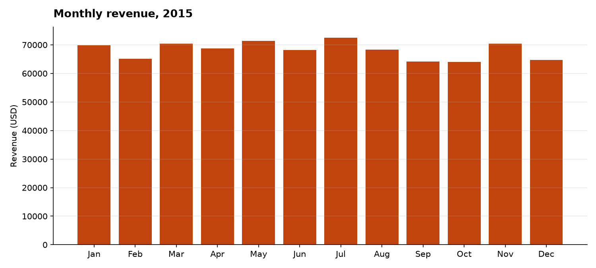
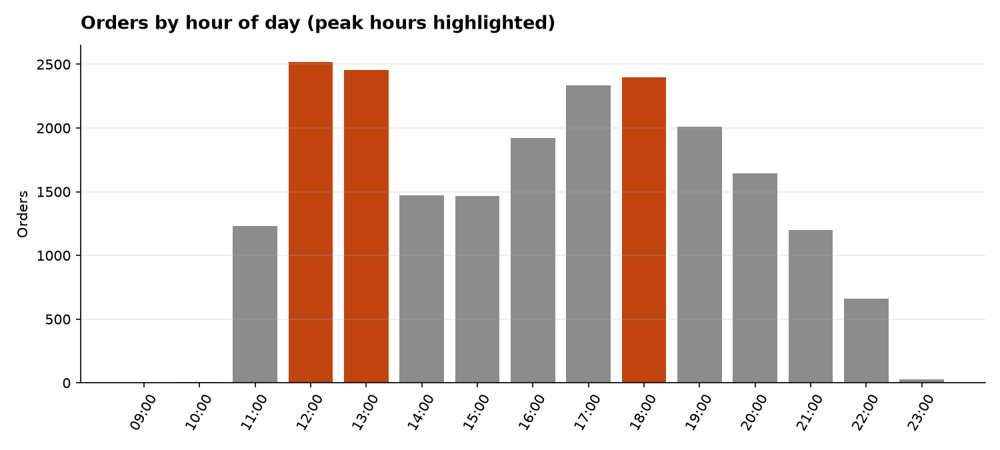
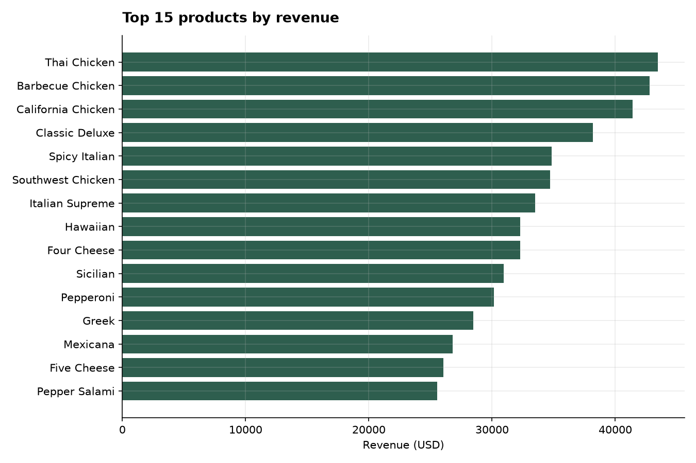
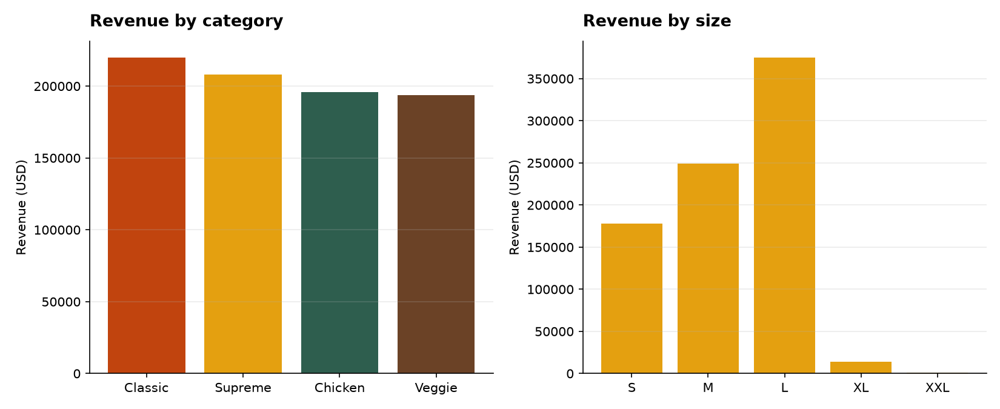
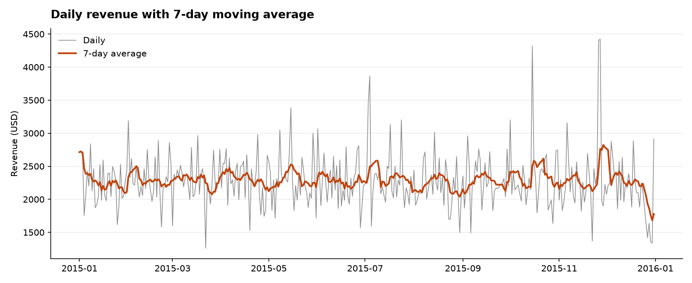

Business Analytics · End-to-End Case Study
48,620 transaction lines taken from a raw CSV to a governed, cloud-hosted dimensional warehouse and two production dashboards — with the business logic held in SQL so Power BI and Tableau can never report different numbers.
Every figure on this page is produced by the pipeline and traceable to a
view in sql/02_views.sql. Nothing is typed by hand.
Five stages, each an independent script, chained by one make all.
The gate in stage 3 exits non-zero on failure, so a bad load can never reach the dashboards.
Column types, ranges, nulls, duplicates, referential consistency, price reconciliation.
src/profile_data.py
Parses dates and times, standardises sizes, splits the recipe text, quarantines bad rows, builds a star schema with surrogate keys.
src/transform.py
14 assertions — row counts, key integrity, revenue reconciliation, calendar continuity, duplicate grain. CI-ready.
src/data_quality.py
Idempotent, single-transaction load into managed PostgreSQL, chunked, with post-load row-count verification.
src/load_to_postgres.py
Reads the SQL views, renders charts, writes the insight memo in number → so-what → action form.
src/analysis.py
Kimball dimensional design at line-item grain. The recipe is a genuine many-to-many, so it is resolved with a bridge rather than flattened into a delimited string.
dim_date (365) dim_time (24, day parts)
| |
+------------+---------------+
|
dim_pizza (91) ------ fact_order_items (48,620)
product x size one row per pizza line item
| quantity, unit price, total price,
| order-level stats, price_variance_flag
|
bridge_pizza_ingredient (518)
|
dim_ingredient (65)
12 security_invoker views hold every
definition — KPIs, ABC classification, the weekday × hour demand matrix, and a self-join
market-basket calculation returning support, confidence and lift. Both BI tools read the
same views, so a reviewer cannot find two versions of "revenue".
Row-level security enabled on all six tables,
read-only grants for reporting roles, credentials read from environment variables only,
and rejected rows written to rejected_rows.csv with the reason attached
rather than silently dropped.
Six findings, each written as a decision rather than an observation.
Lunch and dinner carry 68.3% of all orders; the single busiest hour is 12:00 with 2,520 orders.
Action: roster to the hourly curve instead of flat shifts, and pre-prep A-class products before 11:00.
Friday averages $2,721 a day against Sunday's $1,908 — a 43% spread that repeats all year.
Action: move promotions onto the two weakest weekdays and protect margin on peak days.
Month-over-month revenue never moves more than 9.9%; July peaks at $72,558, October troughs at $64,028.
Action: stop chasing footfall; growth has to come from basket size and mix.
21 of 32 products drive the first 80% of revenue. Four C-class items return 6.9% while occupying menu and prep capacity.
Action: menu-rationalisation review on the C-class tail.
Categories sit within 3.2 points of each other, but large alone drives 45.89% of revenue.
Action: make upsizing the default prompt at order entry — the price step is incremental margin on identical prep time.
38.0% of orders contain a single pizza. Affinity pairs with lift above 1 are listed in vw_product_affinity.
Action: surface the top affinity pairs as checkout add-ons; converting 10% of single-pizza orders is a mid-single-digit revenue gain.
Rendered by src/analysis.py straight from the warehouse views.





cp .env.example .env # fill in the five PostgreSQL values pip install -r requirements.txt make all # profile -> transform -> quality gate -> load -> analysis open reports/insights.md
docs/HOSTING_GUIDE.md, along
with the exact provisioning steps and the pooled connection string both BI tools need.
| Path | What it is |
|---|---|
data/raw/pizza_sales.csv | The untouched source, tracked so results are reproducible |
src/ | Six Python modules — config, profile, transform, quality, load, analysis |
sql/01_schema.sql | DDL, indexes, row-level security, grants |
sql/02_views.sql | 12 reporting views — the semantic layer both BI tools read |
sql/03_kpi_queries.sql | 13 standalone analyst queries for ad-hoc questions |
bi/powerbi/ | Power Query M, 27 DAX measures, 4-page report spec, saved .pbix |
bi/tableau/ | .tds datasource, calculated fields and LODs, 3-dashboard spec, saved .twbx |
docs/ | Hosting guide, Power BI guide, Tableau guide, data dictionary, walkthrough |
reports/ | Profile report, quality report, charts, insight memo |
portfolio/index.html | This page — the presentation layer for the case study |
Stated up front, because a reviewer will ask.
The source carries no cost, margin, store, channel or customer identifier, so profitability and retention are out of scope and every recommendation is framed on revenue and mix. The vegetarian flag is derived by matching meat terms in the recipe text — an analytical convenience, not a certified dietary claim. Affinity is computed at product level ignoring size, which is the correct grain for a cross-sell prompt. Seven of 365 days recorded no sales and are flagged for confirmation as planned closures rather than assumed to be missing data.